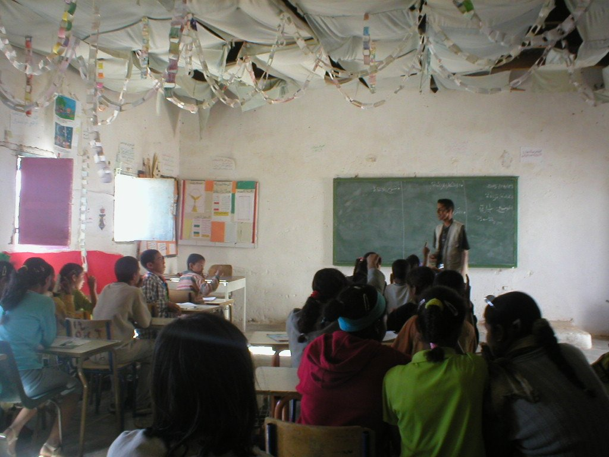
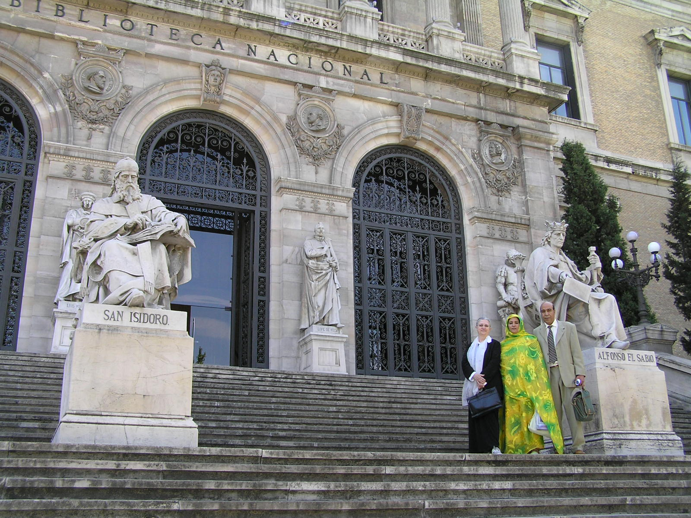
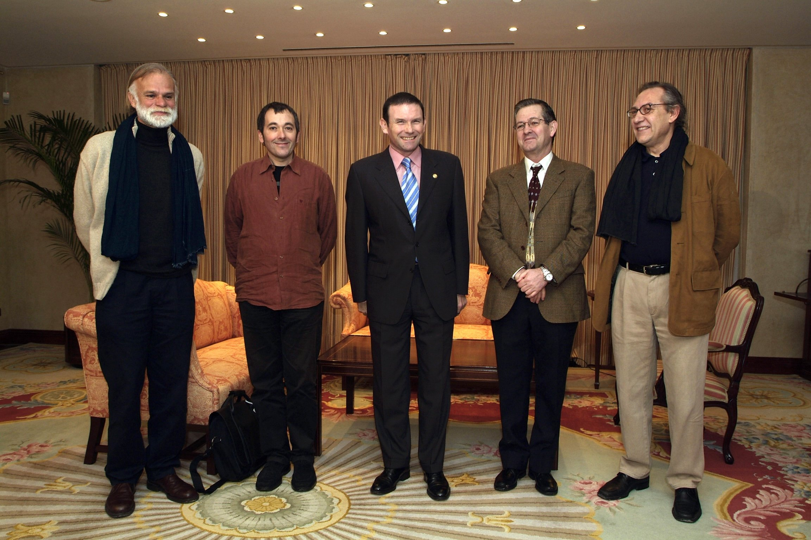
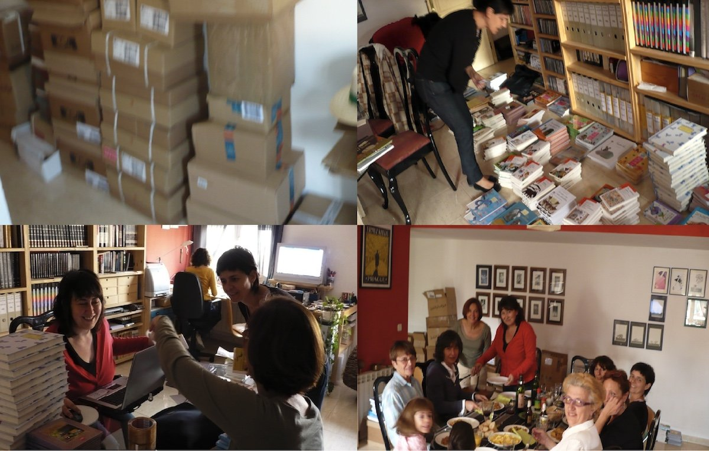

Un proyecto apasionante: el Bubisher

A lo largo de estos años, cientos, miles de personas han aportado literatura, imágenes, trabajo, ideas y experiencia.
El logotipo de la Asociación fue un regalo de Jesús Gabán, a quien damos las gracias por su generosidad.
Invitación
La biblioteca, los bibliobuses y el personal que trabaja en ellos se nutre a partir de pequeñas aportaciones económicas. Cualquier grano de arena llena el desierto.
Si quieres colaborar, puedes hacerlo a través de la página www.bubisher.com. ¡Gracias!
Si quieres conocer algunos entresijos de esta historia...
2001, 2003...
Tras algunos viajes y visitas a las escuelas de los campamentos de refugiados nos encontramos con que la enseñanza es obligatoria para niños y niñas; maestros y maestras enseñan el español, con poco más que la ayuda de una pizarra.
Solo algunos niños tienen cuadernos. No hay un solo libro, ni de texto ni de lectura. Y la pregunta es: ¿cómo podemos llevar libros, con tantos como sobran en España?
"¡Hay que defender el español!, nos dijimos."

2004, 2005...
Intensa actividad política con dos objetivos fundidos: autodeterminación del Sáhara y defensa del español en los Campamentos. Creamos una asociación informal. Enviamos cartas a Zapatero y al Congreso de Diputados con más de 400 firmas del mundo de la Cultura. Entrevistas en el Instituto Cervantes y en la Biblioteca Nacional. Respuestas corteses, cuando las hubo.
Llegamos a una conclusión: lo que se pueda hacer, hay que hacerlo solos.
¡Pero hay que llevar libros...!

2005, 2006...
La Generación de la Amistad (2005) cuaja un grupo de escritores saharauis. Vamos tomando decisiones: llevaremos libros buenos y nuevos, no "sobras". Preguntamos si hay bibliobuses de desecho. Nada. Llega un aliado inesperado: el lehendakari Ibarretxe nos regala un camión acondicionado. Pedimos a Carmen Carramiñana y Merche Caballud (Premios de Fomento de la Lectura) un listado de libros infantiles relevantes.
Un grupo de trabajo comienza a fraguar: bibliotecarias, maestras, amigas y amigos del Sáhara...
Esto promete, nos repetimos. Éramos jóvenes y entusiastas.

2007, 2008
La lista de Merche y Carmen da sus frutos. Escribimos a todas las editoriales y pedimos lotes de 10, de 15... La respuesta de todas las editoriales (salvo una) es espléndida. Contamos con casi 2000 libros. Nos regalan ejemplares y costes de envíos. Nos sentimos agradecidos y sobrepasados...
Pero hay que ordenar, registrar, tejuelar, sellar, en una tarea colectiva... Los libros van informatizados, con ordenadores para el préstamo. Desde Aragón se hacen planes de lectura...
¡Por fin tenemos algo que celebrar!

(Continuará...)